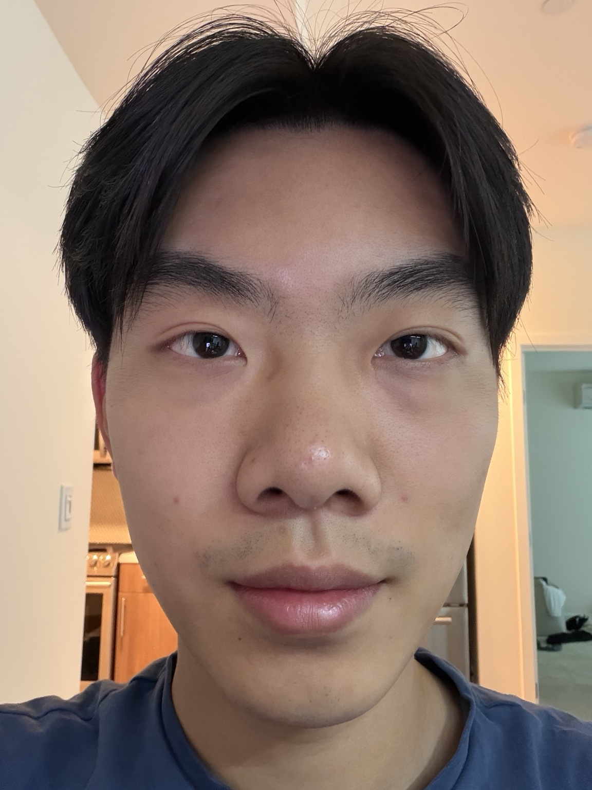
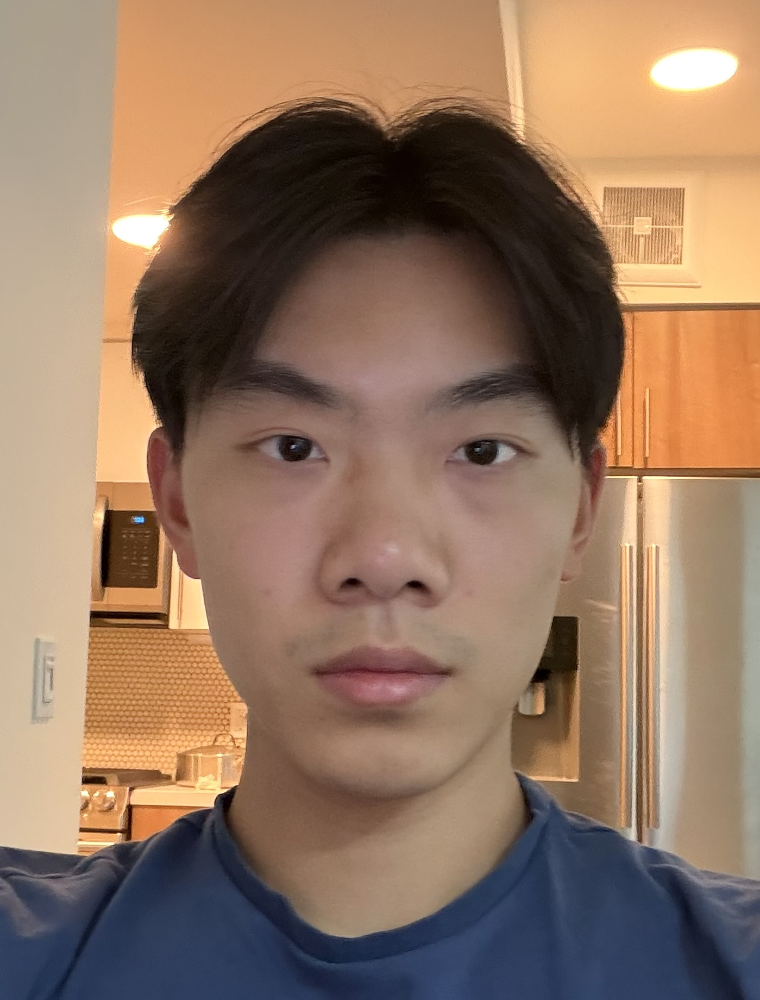
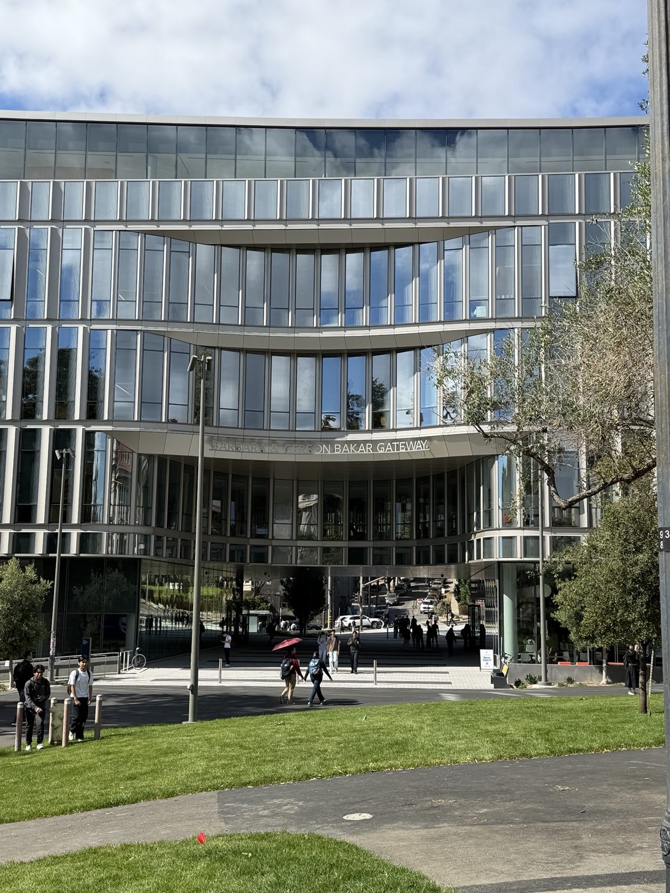
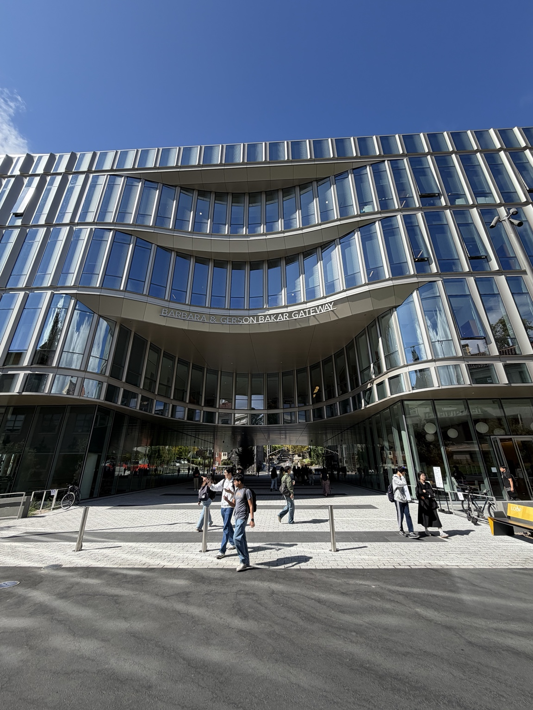
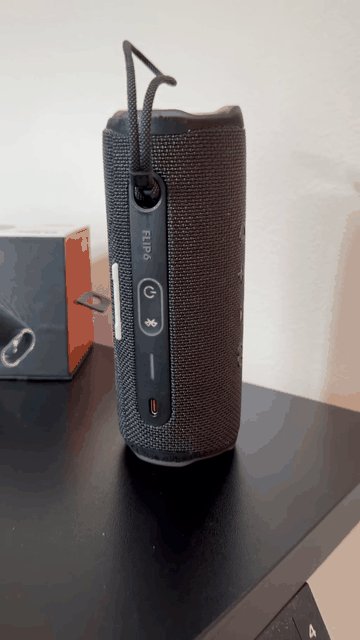

CS 180 · Fall 2026 · Project 0
Becoming Friends
with Your Camera
Aaron Tu — exploring how camera position and focal length change perspective, from portraits to architecture to a dolly zoom.
Selfie: the wrong way vs. the right way
The close-up photo exaggerates depth differences across the face because the camera is very near the subject. Stepping back reduces this perspective distortion; zooming in then restores similar framing without changing the more natural perspective created by the greater camera distance.


Architectural perspective compression
From farther away with zoom, differences in distance across the building are small relative to the camera distance, so the scene looks flatter and more compressed. Moving closer and using a wider view increases those relative depth differences, producing stronger perspective and more dramatic convergence.


The dolly zoom
For the dolly zoom, I changed the camera-to-subject distance while compensating with zoom so the speaker stays roughly similar in size. Because camera position controls perspective while focal length controls framing, the background shifts relative to the subject even as the subject remains near the center of the frame.
